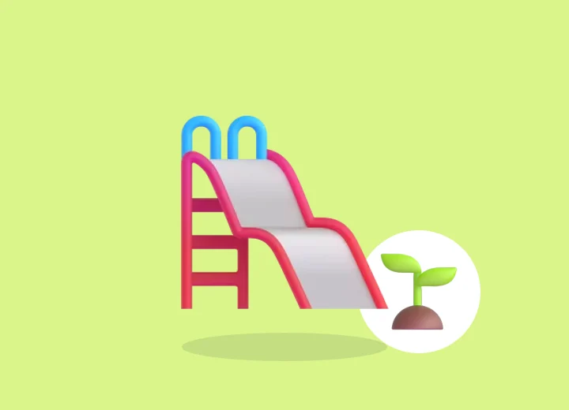

01
WMM PLAYGROUND뭉치고 · 첫 번째 문Mungchigo · Door one
- 누가Who
- 나이·성별·나라·경력과 상관없이 누구나. 가입 없이 무료.Anyone, regardless of age, gender, country or background. Free, no sign-up.
- 무엇을What
- 120개 아이디어 씨앗에서 고르고, 한 장의 기획서를 만들고, 7일 실천과 14일 검증으로 직접 시험합니다.Pick from 120 idea seeds, write a one-page plan, then test it yourself with 7 days of practice and 14 days of validation.
- 얻는 것What you gain
- 내 아이디어가 실제로 통하는지에 대한 기록, 그리고 함께할 사람을 찾을 협업 제안서.A record of whether your idea really works, plus a collaboration brief to find teammates.
- 다음 문으로To the next door
- 14일 검증을 마친 아이디어는 본인이 원할 때 GOV RADAR 무료 가입으로 이어 갑니다. 아이디어의 권리는 처음부터 끝까지 만든 사람에게 있습니다.When you finish a 14-day test, you can choose to continue with a free GOV RADAR sign-up. Your idea stays yours from start to finish.